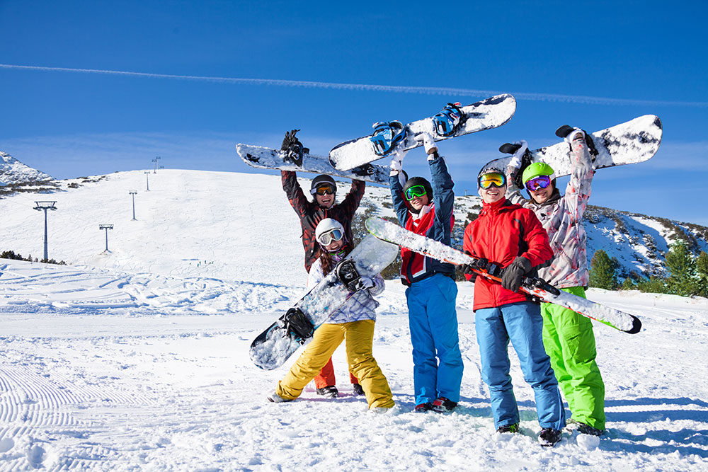
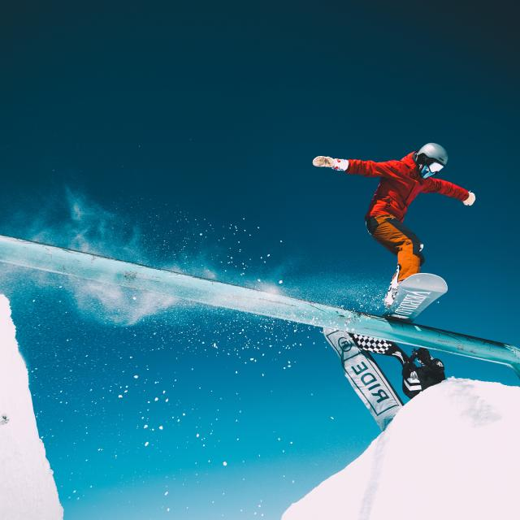

Rynoridge is your trusted partner for authentic winter adventures, where the spirit of the outdoors meets exceptional equipment. Our gear is your gateway to the mountains, where performance, style, and responsibility converge.
Welcome to Rynoridge!
Discover the best winter sports equipment on Earth
Explore

Spectacular Skis
Rynoridge skis are engineered for the discerning skier, those who seek a blend of precision, power, and versatility on the mountain. We offer a diverse range of skis, from nimble carving skis designed for pristine groomers to robust all-mountain skis that conquer varied terrain, and floaty powder skis that excel in deep snow. Each pair is meticulously crafted with advanced construction techniques and premium materials, ensuring optimal performance and durability. We prioritize responsiveness and stability, allowing skiers to confidently tackle any slope, from steep descents to tight turns. Our designs embody a modern aesthetic, with eye-catching graphics that reflect the spirit of adventure. While performance remains paramount, we also integrate sustainable practices, subtly incorporating recycled materials where possible, demonstrating our commitment to responsible manufacturing. Rynoridge skis are built to elevate your skiing experience, empowering you to explore the mountains with confidence and style.
Read more

Built to last
Rynoridge fuels your passion for the mountains with expertly crafted skis and snowboards, built for those who chase the thrill of winter. We believe in gear that performs as hard as you do, empowering you to explore untouched powder and conquer challenging terrain. Our skis and snowboards are expertly crafted for those who chase the thrill of winter, designed to perform as hard as you do. We believe in gear that empowers you to explore untouched powder and conquer challenging terrain, while minimizing our impact with thoughtful design and sustainable practices.
Read more
Superb Snowboards
Rynoridge snowboards are crafted for riders who demand performance and style in every turn. We build boards that cater to a variety of riding styles, from agile freestyle decks designed for park mastery to powerful freeride boards that excel in deep powder and challenging backcountry conditions. Each board is meticulously engineered with premium materials, focusing on responsiveness, durability, and a smooth, intuitive feel. We incorporate innovative designs that blend eye-catching aesthetics with functional features, ensuring riders not only perform at their best but also express their individuality on the slopes. While pushing the boundaries of performance, we also explore sustainable practices, subtly integrating recycled materials into select models, reflecting our commitment to both the rider and the environment. Rynoridge snowboards are built to elevate your riding experience, empowering you to explore the mountains with confidence and style.
Read more